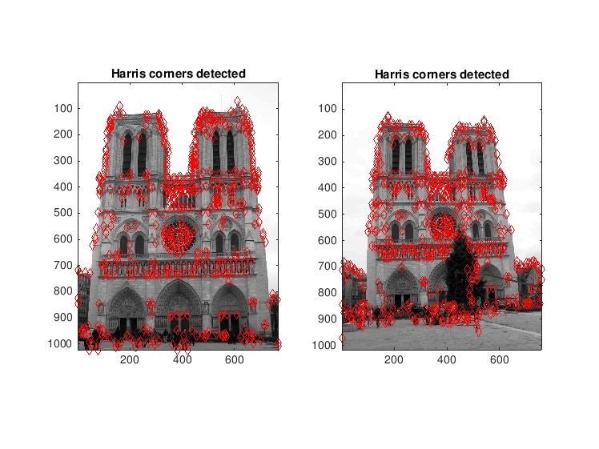

Project 2: Local Feature Matching
Feature Detection: Harris-Stephen's corner detection algorithm
For the feature detection, I decided to implement the Harris-Stephen's corner detection algorithm. The algorithm is very straightforward:
- Generate the xy-gradients of the image, Ix and Iy.
- Smoothen the gradients with a small gaussian kernel.
- Generate the intermediate matrices for computing the Harris cornerness measure by taking products amongst the above gradient matrices.
- Convole these gradient-products with a larger Gaussian and apply thresholding to detect Harris corner points.
- Perform non-maximal suppression
For a slightly mathematical explanation, wikipedia has a good description of the
algorithm. However, in addition I explanined some more details of it (for personal clarity) here on my personal
webpage
The non-maximal suppression finds the local maxima points within an adaptive region around each potential corner point after thresholding - this ensures that we detect only the promiment corner points and not the neighboring points whose gradient magnitudes may also be above the threshold.
|  |
| The figure shows the most confident 500 points generated by the Harris corner detection algorithm on the Notre Dame test image. |
Feature Descriptor: SIFT-like feature
For describing the feature point, I implemented a SIFT like feature descriptor. Here's a brief description of the basic SIFT descriptor algorithm:
- At each point, I generate the polar-image gradients (this can be speeded up by reusing the xy-gradients generated in feature detection part and converting them into polar coordinates).
- We take a patch of the image gradients 16-by-16 pixels wide centered at the feature point. (here the feature_width is 16 pixels) and divide it into 4-by-4 pixels wide sub-patches.
- Depending on the orientation of the gradient at each point in the sub-patch, we bin it into a histogram of 8 bins. Each bin represents an orientation generated by splitting the axis around the centre of the sub-patch into 8 equal parts of a circle.
- Note that, we increment the bin of the histogram corresponding to the orientation of the closest match amongst the 8 basis-orientations.
- Thus we now have 4-by-4 set of histograms, with each histogram having data for 8 orientations - thereby giving us a final feature vector of size 4x4x8 = 128
Feature Matching: Naive brute force comparison with NND
Now that we have a set of feature points and the correspoding descriptors for the two images, we need to match them and choose the best matches. This is done in a very naive way (without any speed optimization using kd-trees, etc).
- For each feature point of the first image, we compute the Euclidean distance in feature-space to every feature point in the second image and take the ratio of the nearest two feature points.
- If the ratio is below a certain threshold, we consider the nearest feature point to be a valid point with a confidence inversely proportional to the ratio.
For the test images, I evaluate and display the 100 most confident matches.
Extra stuff: Improved SIFT description
The simple binning algorithm essentially takes into account only the orientation of the gradients. In addition, it only considers closest match orientation for binning.
I decided to implement weighted binning taking into account the magnitudes of the gradients as well. Although it is suggested in the slides to distribute magnitude to the bins of the closest two orientations, it works better if you distribute it to all the bins with exponential weighting. Thus, every gradient vector contributes to all the 8-bins exponentially weighted to the inverse of the distance to between the gradient orientation and each of the basis orientations. Also, instead of trilinear interpolation, it works better to distribute a part of this weighted gradient magnitude to the neighbor histogram depending on the orientation of the gradient.
Some more results
Notre Dame image pair
|
|
 |
| Accuracy rate of 95% |
Mount Rushmore image pair
Pantheon Paris image pair
|
|
| Evaluation data not available |